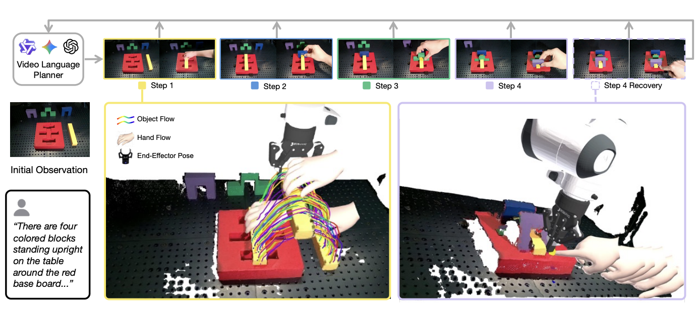
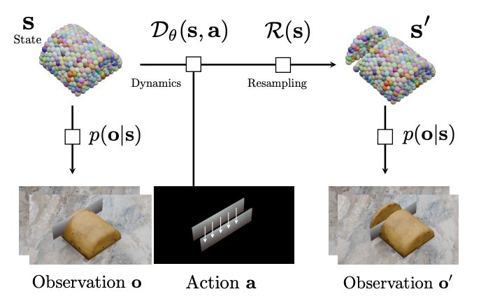
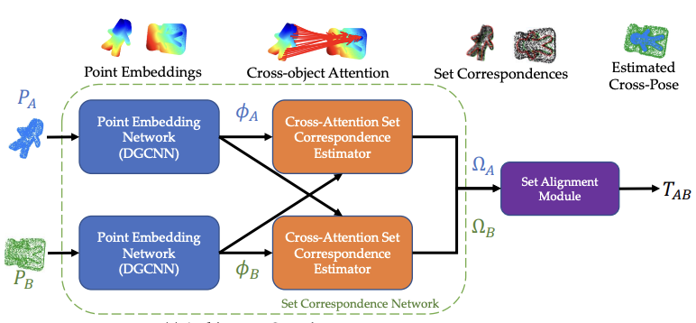
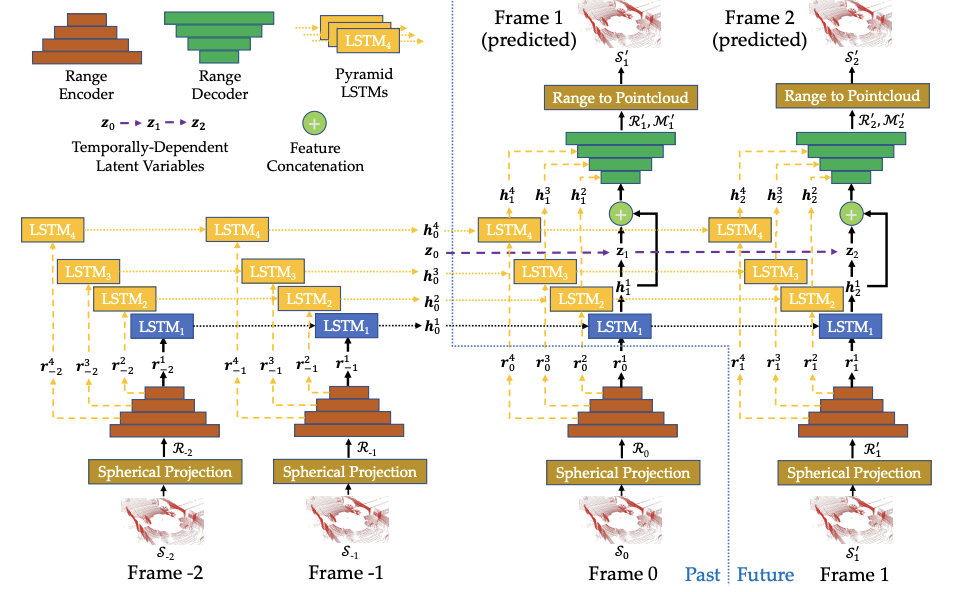
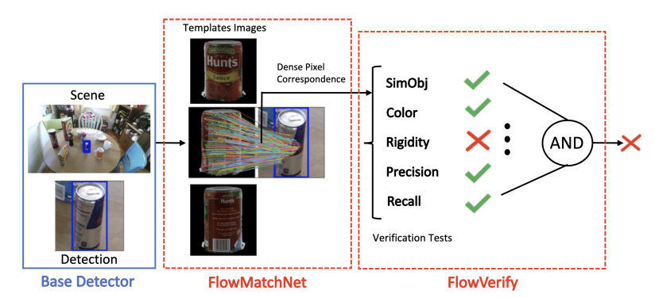
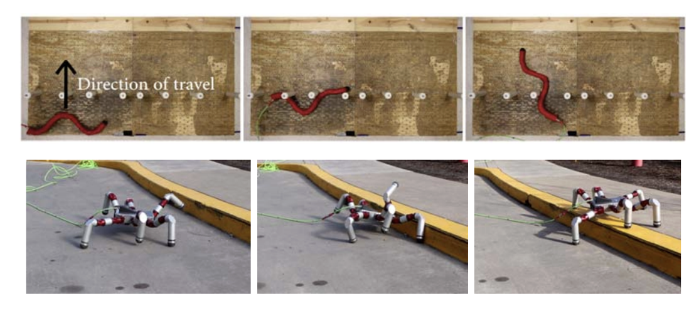

Robotics and 3D perception researcher on grounding world models for robot manipulation. Research interns at Toyota Research Institute, and the Boston Dynamics AI Institute / Robotics & AI Institute.






Completed bachelor’s degree in 3 years